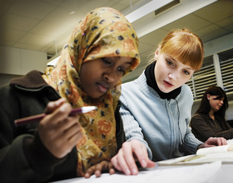

Sivusto on tehty Äidit mukana -hankkeen puitteissa. Sivuston tarkoitus on listata perustietoa tietokoneista, esitellä käyttökohteita ja antaa myös ohjeita.
Äidit mukana -hankkeessa kehitetään uusi malli, jonka avulla voidaan edistää maahanmuuttajaäitien kotoutumista ja työllistymistä. Alussa kerrotaan tässä projektissa enemmän tietokoneista, netin käytöstä ja Wilman käytöstä. Kielituettu koulutus tapahtuu Careerian Vantaalla. Careerian oppilaat on auttamassa teitä.
Kuva: https://suomenkuvalehti.fi/jutut/kotimaa/pystyyko-koulu-kotouttamaan-maahanmuuttajat/
Hankkeen ensimmäisessä vaiheessa syyslukukaudella äidit opiskelevat yhdessä lapsensa kanssa suomen kieltä ja matematiikan perusteita Vantaalla sijaitsevissa kouluissa.
Lisäksi äidit opiskelevat tieto- ja viestintätekniikkataitoja, suomalaista yhteiskuntaa sekä oppimaan oppimisen taitoja. Kevätlukukaudella äitien kielenopetus siirtyy seuraavaan vaiheeseen, jossa äidit ohjataan työkokeiluun.
Työssäoppimisessa painotetaan kielitietoista ohjaamista. Ensimmäisen vaiheen kevät koostuu yhtenä päivänä tapahtuvasta suomen kielen opetuksesta ja neljänä päivänä tapahtuvasta työharjoittelusta.
Hankkeen toisella toimintakaudella äidit aloittavat kielitietoisen työvaltaisen ammatillisen koulutuksen, joka tähtää osatutkintojen ja tutkinnon suorittamiseen sekä työllistymiseen.